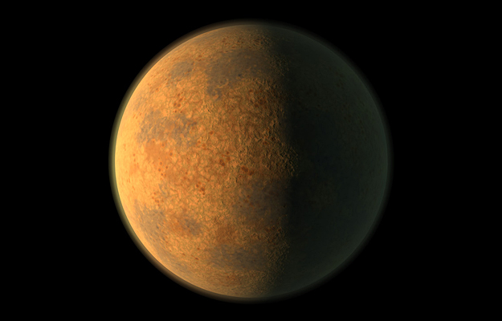
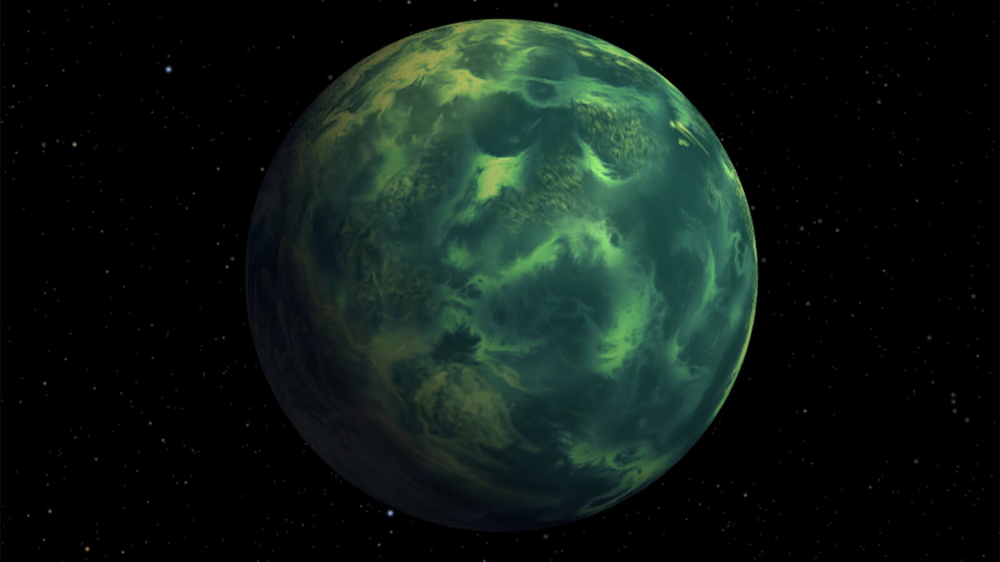

All of the planets in our solar system orbit around the Sun. Planets that orbit around other stars are called exoplanets. Exoplanets are very hard to see directly with telescopes. They are hidden by the bright glare of the stars they orbit.
So, astronomers use other ways to detect and study these distant planets. They search for exoplanets by looking at the effects these planets have on the stars they orbit.
One way to search for exoplanets is to look for "wobbly" stars. A star that has planets doesn’t orbit perfectly around its center. From far away, this off-center orbit makes the star look like it’s wobbling.
Hundreds of planets have been discovered using this method. However, only big planets—like Jupiter, or even larger—can be seen this way. Smaller Earth-like planets are much harder to find because they create only small wobbles that are hard to detect.
In 2009, NASA launched a spacecraft called Kepler to look for exoplanets. Kepler looked for planets in a wide range of sizes and orbits. And these planets orbited around stars that varied in size and temperature.
Some of the planets discovered by Kepler are rocky planets that are at a very special distance from their star. This sweet spot is called the habitable zone, where life might be possible.
Kepler detected exoplanets using something called the transit method. When a planet passes in front of its star, it’s called a transit. As the planet transits in front of the star, it blocks out a little bit of the star's light. That means a star will look a little less bright when the planet passes in front of it.
Astronomers can observe how the brightness of the star changes during a transit. This can help them figure out the size of the planet.
By studying the time between transits, astronomers can also find out how far away the planet is from its star. This tells us something about the planet’s temperature. If a planet is just the right temperature, it could contain liquid water—an important ingredient for life.
So far, thousands of planets have been discovered by the Kepler mission.
We now know that exoplanets are very common in the universe. And future NASA missions have been planned to discover many more!

